Let's suppose that as a child, you had two goldfish that you kept in a tank on your kitchen counter. When you first
bought them, they were rather small, and could comfortably swim around in such a confined habitat. However, as the
years passed, these goldfish grew larger and larger, until they could no longer exist comfortably in the increasingly
stifling tank. At this point, your mother suggested that you move them from the kitchen to the small pond in your
backyard. With some sadness, you complied, and much to your delight, the two original fish laid eggs and the
previously bereft pond bloomed into a goldfish utopia.
Many years later, in an entirely normal and certainly not contrived flash of curiosity, you decide that you wish to understand exactly what caused your goldfish population to grow as they did. Fortunately, you were a creepy little science nerd, and every time a new generation of fish was born into that scummy pond, you counted them all up and wrote the total in your journal. Looking back at this data, you see the following:
You notice that although the population growth starts off rather vigorously, after the fifth generation, the goldfish
seem to have settled their numbers at around twenty. In fact, checking the pond today, there seem to be roughly the
same number of fish as there were back when you stopped keeping track in your journal. To assure yourself of this
conclusion, you sketch out a quick graph of the pond's goldfish population by generation:

It certainly seems that your assessment was correct! At first, the population grows rapidly, but then it seems to hit
a wall at which it cannot increase further. 'Neat, I guess,' you think, and then go off to browse reddit because,
honestly, who cares about the growth of a goldfish population in a pond?
Okay, so that's enough with the stupid storytelling. What I was trying to do in the paragraphs above was illustrate an important (and perhaps obvious) fact about modelling population dynamics in nature (or ponds): growth is NOT rampantly exponential. It's pretty easy to understand why this is true. The world that we live in has a finite supply of resources. Whether we are talking about the global human population or goldfish in a backyard pond, there's only so much food and space to share before we (or the fish) become starved and stifled. Of course, before we reach this resource ceiling (so to speak), there's very little to stop a population from booming--providing the hopeful assumption that no big predators are out there eating many of us. This is why the goldfish seemed to be doing so well for the first five generations, before their numbers tapered off at twenty.
Let's first attempt to describe the exponential growth phase. Certainly, a population's growth is a function of its size. Let's consider how large a population of size P_t will become after one generation. At the very least, the subsequent generation (which we shall call P_{t+1}) will be equal to P_t. So, in the most basic case, we have:
Let's begin by supposing that the population will tail off at some known value M. We shall refer to this value as the "carrying capacity." We want to find some way to curb the population growth as it trends nearer to M. In other words, we want to do something to the exponential growth term rP_t that causes it to decrease as P_t approaches M. One such approach would be to multiply rP_t by some expression that gets smaller and smaller as the value of P_t nears that of M. Here's what that expression might look like:
Let's see if we can clean up our model without adversely affecting its behavior. In particular, instead of calculating the population size P_t, let us simply determine the population as some percentage of the carrying capacity, which we shall refer to as x_t. In other words, let
Since equation (7) provides population as a percentage of carrying capacity x_t at discrete time-steps t, the best growth rate we can hope for is given by the change in population between time-steps t and t+1. Graphically, this amounts to determining the slope of the line between t and t+1. Using point-slope form, this is given by:
However, it is worth asking what might happen if x(t) were some other function. Specifically, what if x(t) were continuous for all inputs t, rather than recursively defined for discrete time-steps? What would such a function look like? Ideally, it would model the same S-curve behavior as our recursive function, but simply smoothed out for all possible times t.
Let's suppose that x(t) is continuous, and see what happens. Since x(t) is continuous, it now makes sense to determine the growth rate over an interval of less than one time-step. Let's re-write equation (10) to describe the growth rate over the interval between t and t+ \Delta t:
Many years later, in an entirely normal and certainly not contrived flash of curiosity, you decide that you wish to understand exactly what caused your goldfish population to grow as they did. Fortunately, you were a creepy little science nerd, and every time a new generation of fish was born into that scummy pond, you counted them all up and wrote the total in your journal. Looking back at this data, you see the following:
| Generation | Population size |
|---|---|
| 1 | 2 |
| 2 | 4 |
| 3 | 7 |
| 4 | 11 |
| 5 | 16 |
| 6 | 19 |
| 7 | 20 |
Okay, so that's enough with the stupid storytelling. What I was trying to do in the paragraphs above was illustrate an important (and perhaps obvious) fact about modelling population dynamics in nature (or ponds): growth is NOT rampantly exponential. It's pretty easy to understand why this is true. The world that we live in has a finite supply of resources. Whether we are talking about the global human population or goldfish in a backyard pond, there's only so much food and space to share before we (or the fish) become starved and stifled. Of course, before we reach this resource ceiling (so to speak), there's very little to stop a population from booming--providing the hopeful assumption that no big predators are out there eating many of us. This is why the goldfish seemed to be doing so well for the first five generations, before their numbers tapered off at twenty.
The S-curve
It seems that many examples of population growth follow a shape similar to that of our goldfish population. (Does it
not seem that way? Check out these:
New York City
and many others.) The
next question (this being a math post, after all) is how we might use an equation to model the shape of these curves.
What type of equation would both express the initial quasi-exponential growth of a population and the subsequent
tapering off as that population reached carrying capacity?
Let's first attempt to describe the exponential growth phase. Certainly, a population's growth is a function of its size. Let's consider how large a population of size P_t will become after one generation. At the very least, the subsequent generation (which we shall call P_{t+1}) will be equal to P_t. So, in the most basic case, we have:
P_{t+1} = P_t.
We should also like to add some term that accounts for new offspring born into the population. As we discussed before,
the number of offspring ought to be a function of the current population's size. Let's suppose that some percentage
r of the current population breed each generation. In that case, the number of new
offspring can be represented by rP_t. Putting all of this together, we can come up with
an equation to describe the exponential growth phase after one generation:
P_{t+1} = P_t + rP_t.
The issue here is that this equation will produce larger and larger outputs generation after generation. There
is nothing to slow it down. What can we do to fix this?
Let's begin by supposing that the population will tail off at some known value M. We shall refer to this value as the "carrying capacity." We want to find some way to curb the population growth as it trends nearer to M. In other words, we want to do something to the exponential growth term rP_t that causes it to decrease as P_t approaches M. One such approach would be to multiply rP_t by some expression that gets smaller and smaller as the value of P_t nears that of M. Here's what that expression might look like:
1 - \frac{P_t}{M}.
We can see that as P_t becomes larger, the ratio \frac{P_t}{M}
approaches 1, and the overall expression approaches 0. Furthermore, if the current population is larger than the
carrying capacity, the ratio will be greater than 1, and the expression becomes negative. This means that if our population
is overcrowded, our model will account for this fact and cause the population size to diminish. Let's put all of these
ideas together:
P_{t+1} = P_t + rP_t \left( 1 - \frac{P_t}{M} \right).
Does this equation achieve our goal of modelling an S-curve? Let's suppose that the carrying capacity is
M=20, that 30\% of our population breeds each generation
(r=0.5), and that we start with a population of size 2. This gives:
P_{t+1} = P_t + 0.3P_t \left( 1 - \frac{P_t}{20} \right), \; P_0=2.
What are the dynamics of our population? Does our model work?

It certainly seems to! The plot above exhibits the behavior that we are looking for. Our population initially grows at
a relatively slow rate, speeds up as it gains more individuals, and then tapers off as it approaches carrying capacity.
This essentially checks all of our boxes.
Let's see if we can clean up our model without adversely affecting its behavior. In particular, instead of calculating the population size P_t, let us simply determine the population as some percentage of the carrying capacity, which we shall refer to as x_t. In other words, let
x_t = \frac{P_t}{M}.
Solving for P_t and plugging the resulting expression in equation (4) gives:
x_{t+1} = x_t + rx_t(1-x_t).
This has the effect of normalizing the population size. (That is to say, it squishes the population down to a range of
values between 0 and 1.) The resulting plot is shown below:

Okay, sweet. We've managed to develop in equation (7) a reasonably good model for goldfish populations in ponds.
What can we actually do with it?
Some Analysis
One natural question we might ask is, "What is the rate of growth of our population at some time
t?" To situate this in a somewhat more believable context, imagine that we've developed a
model for the population of New York City (this is assuming that the population dynamics of huge metropolitan areas
directly parallel that of fish in a pond, which is dubious at best), and we wish to predict the rate of growth in the
year 2050. It would be convenient to have an equation that allows us to do this. What might this equation look like?
Since equation (7) provides population as a percentage of carrying capacity x_t at discrete time-steps t, the best growth rate we can hope for is given by the change in population between time-steps t and t+1. Graphically, this amounts to determining the slope of the line between t and t+1. Using point-slope form, this is given by:
\frac{x_{t+1} - x_t}{t+1 - t} = x_{t+1} - x_t.
Note that rearranging equation (7) gives x_{t+1} - x_t = rx_t(1-x_t). Therefore, we have the
following equation for the growth rate of the population between time-steps t and
t+1:
\frac{x_{t+1} - x_t}{t+1 - t} = rx_t(1-x_t).
Describing this in (admittedly verbose) English, we might say that "the rate of change of the population between
time-steps t and t+1 is a function of the size of the population
at time t." If you are familiar with the language of calculus, this may sound suspiciously
similar to the definition of the derivative.
From Discrete to Continuous
At this point, it is helpful to make a small shift in notation. Until now, we have used the variable
x_t to refer to the population size at time t. This is because our
function for population was defined recursively, and it is conventional for recursive functions to use subscripts.
However, it is equivalently correct to use function notation for the population size. Making this notational edit to
equation (9), we obtain:
\frac{x(t+1) - x(t)}{t+1 - t} = rx(t)(1-x(t)).
Recall that the function x(t) is still the same recursive function described in equation (7).
In particular:
x(t) = x(t-1) + rx(t-1)(1-x(t-1)).
So far, nothing has changed apart from notation.
However, it is worth asking what might happen if x(t) were some other function. Specifically, what if x(t) were continuous for all inputs t, rather than recursively defined for discrete time-steps? What would such a function look like? Ideally, it would model the same S-curve behavior as our recursive function, but simply smoothed out for all possible times t.
Let's suppose that x(t) is continuous, and see what happens. Since x(t) is continuous, it now makes sense to determine the growth rate over an interval of less than one time-step. Let's re-write equation (10) to describe the growth rate over the interval between t and t+ \Delta t:
\frac{x(t+\Delta t) - x(t)}{\Delta t} = rx(t)(1-x(t)).
In fact, there's really no reason to limit ourselves to an interval. It would be even better to simply determine the
instantaneous growth rate at time t. We can obtain this by taking the limit as
\Delta t approaches zero:
\lim_{\Delta t \to 0} \frac{x(t+\Delta t) - x(t)}{\Delta t} = rx(t)(1-x(t)).
Recall that the right-hand side of the above equation is precisely the derivative of x(t),
which we may write as x'(t) (see
the thing I wrote about calculus). Therefore, we have:
x'(t) = rx(t)(1-x(t)).
What does this mean? It says that the continuous version of our recursive population function (equation (7)) is the
function x(t) whose derivative is equal to rx(t)(1-x(t)). How to we
figure out what this function is?
Differential Equations